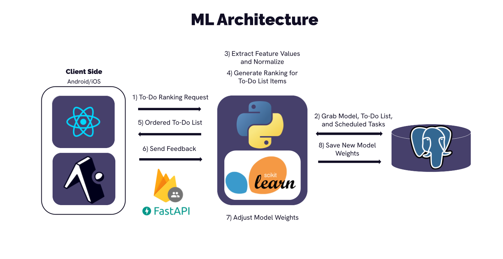

Front-End Technologies
Our front-end application is written in Typescript, powered by React Native and the Expo framework. This means that it is suitable for both Android and iOS devices.
Notable Libraries
Back-End Technologies
Our back-end is built with FastAPI and interacts directly with a PostgreSQL database to manage user data. It supports authentication, task management, and real-time updates to user schedules through a RESTful API. A lightweight machine learning model runs on the backend to rank tasks based on user habits, due dates, and priorities.
Our app's back-end API can be found here. 